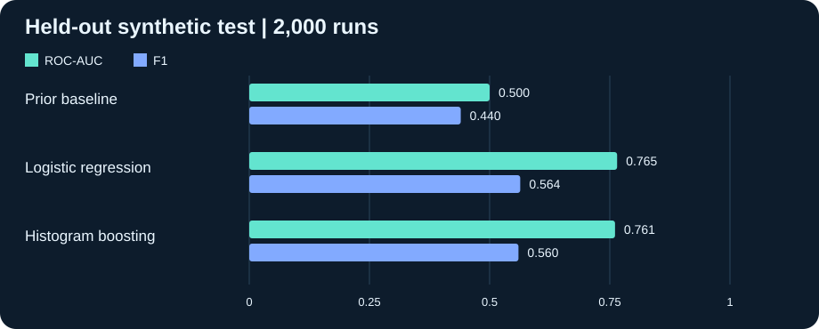

Predict AI agent failure before it finishes.
AgentPulse-5G is a synthetic telemetry benchmark with 20,000 demo rows, a measured CPU model and a reproducible generator targeting 5 GB. Synthetic test performance is not production validation.
Measured benchmark

Build reliable AI products
No paid inference API or LLM prompt is needed to score the supplied numerical telemetry. MIT-licensed original project.
Work with Zubair Hussain